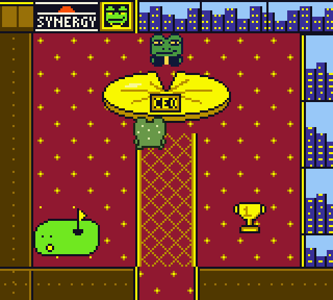
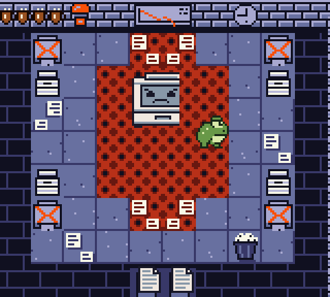
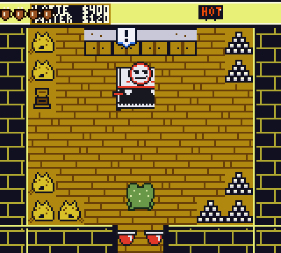
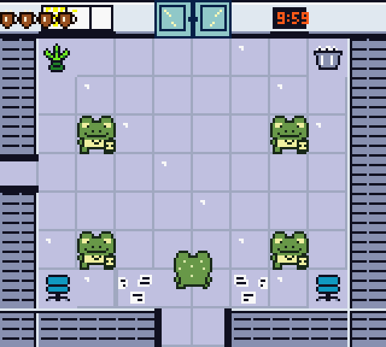
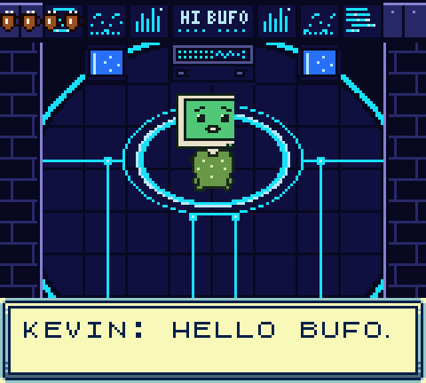
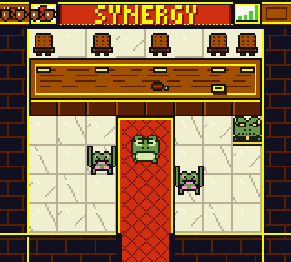

Controls
| Walk | ←↑↓→ or WASD |
|---|---|
| Talk, look, open | Z or J (A) |
| Lick | X or K (B) |
| Dash | Shift (Select), once you find the mug |
| Menu, skip intro | Enter (Start) |
The coffee cups in the corner are Bufo's health. Water coolers refill them. Red markers on the floor show where a boss will strike next.
On a phone, use full screen for touch buttons.
Today's agenda
-

9:00 AM, the CEO's office. Brock hands Bufo the job, because Bufo was the only one who didn't decline the meeting.
-

B1, the IT Basement. Roombas, cable pits, and a printer that only says PC LOAD LETTER.
-

Floor 2, the Break Room. Someone switched the coffee to decaf. The espresso machine is furious about it.
-

Floors 3 and 4, Open Plan and HR. A standup meeting that never ends, the Reply-All Storm, and a folder called Project Lilypad.
-

Floor 5, the Server Room. Bufo finally meets KEVIN. Sorry about the caps. His font is broken.
-

Floor 6, the Board. Five executives. One very long table. 4:30 PM.
Play it on real hardware
Bufo's Workday runs on a Game Boy Color, the ModRetro Chromatic, or any Game Boy Color emulator. Put the ROM on a flash cart and take Bufo to work.
Download the ROM